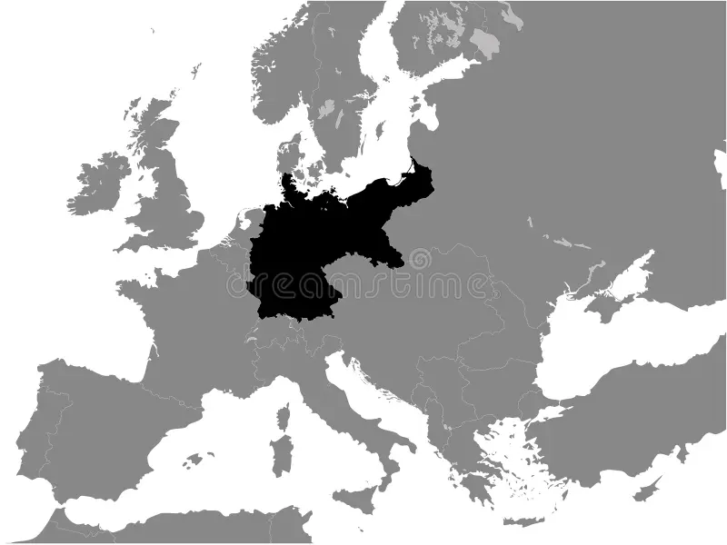
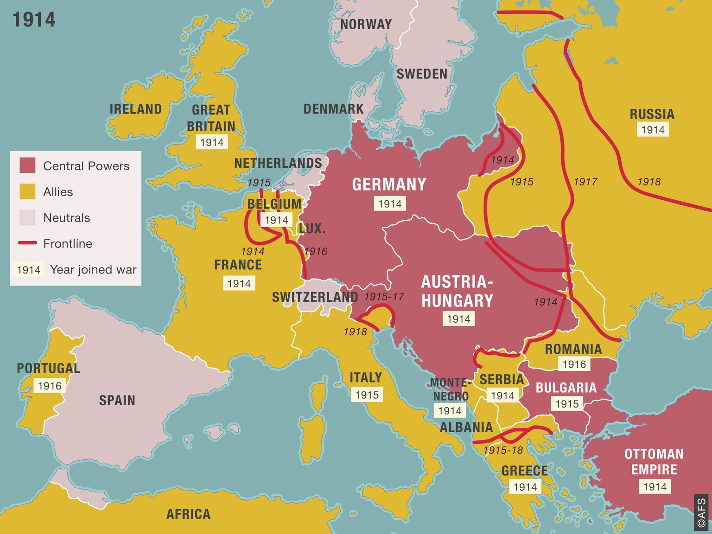

Otto von Bismarck (Schönhausen, Reino de Prusia, 1 de abril de 1815-Friedrichsruh,[1] Imperio alemán, 30 de julio de 1898), fue un estadista y político alemán, artífice de la unificación alemana y una de las figuras clave de las relaciones internacionales durante la segunda mitad del siglo XIX. Durante sus últimos años de vida, se le apodó el «Canciller de Hierro» por la determinación con la que perseguía sus objetivos políticos,[n. 1] fundamentalmente la creación y el mantenimiento de un sistema de alianzas internacionales que aseguraran la supremacía y seguridad del Imperio alemán.
 